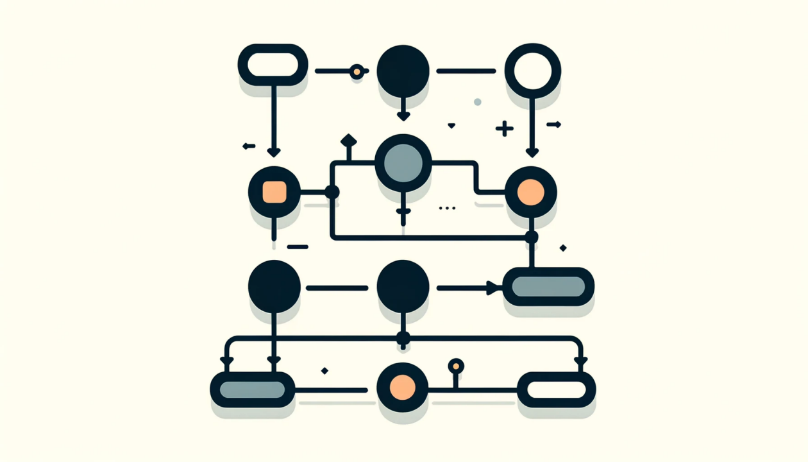

Conjunto de instrucciones ordenadas para resolver un problema específico.


Conjunto de instrucciones ordenadas para resolver un problema específico.
Almacén que puede contener diferentes valores durante la ejecución de un algoritmo.
Expresión lógica que se evalúa como verdadera o falsa, utilizada para tomar decisiones en un algoritmo.
Proceso de repetir una serie de instrucciones hasta que se cumpla una condición.
Estructura que repite un bloque de código varias veces.
Bloque de código independiente que realiza una tarea específica y puede ser reutilizado.
Técnica donde una función se llama a sí misma para resolver subproblemas más pequeños.
Estructura de datos que almacena múltiples valores del mismo tipo.
Representación informal de un algoritmo, que usa una mezcla de lenguaje natural y código.
Proceso de identificar y corregir errores en un algoritmo o programa.
Información que se pasa a una función para influir en su comportamiento.
Técnica para resolver problemas mediante prueba y error, retrocediendo cuando se alcanza un callejón sin salida.
Método práctico no garantizado de encontrar una solución, utilizado cuando no existe un algoritmo exacto eficiente.